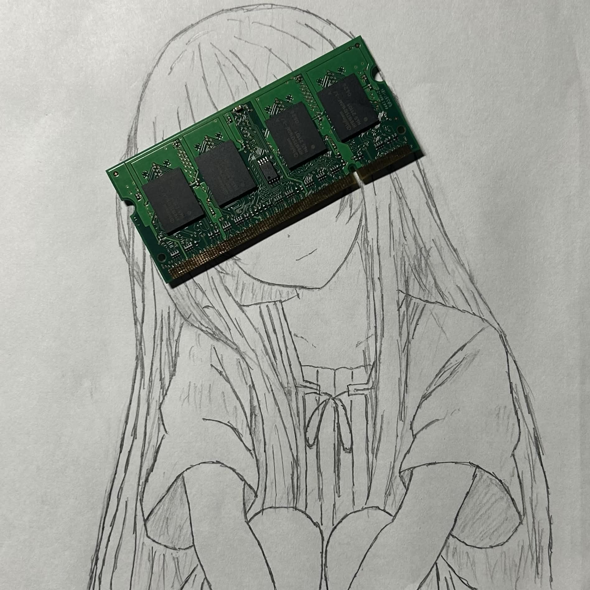

kanon / paleblue_2032
@kanon_hiiragi
I live in the terminal with emacs.
I use NixOS. I'm interested in XR, HCI, and image processing engineering.

@kanon_hiiragi
I live in the terminal with emacs.
I use NixOS. I'm interested in XR, HCI, and image processing engineering.